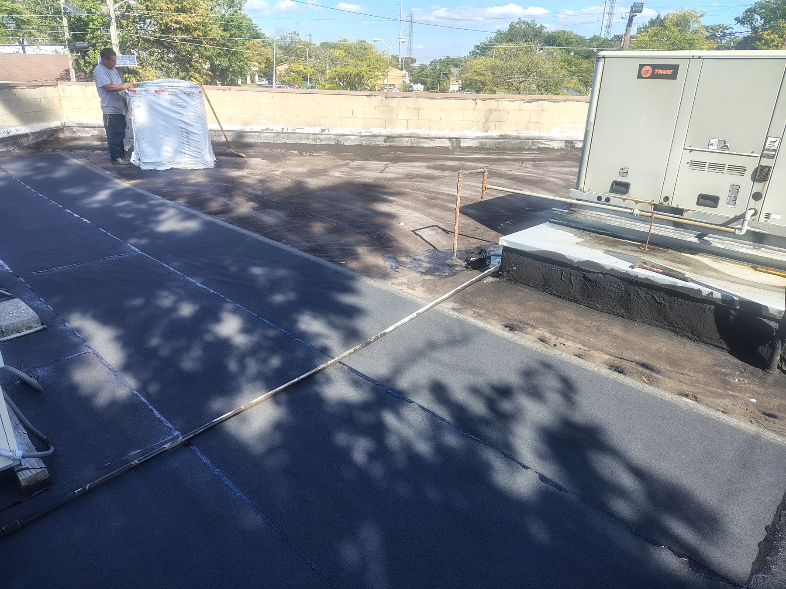
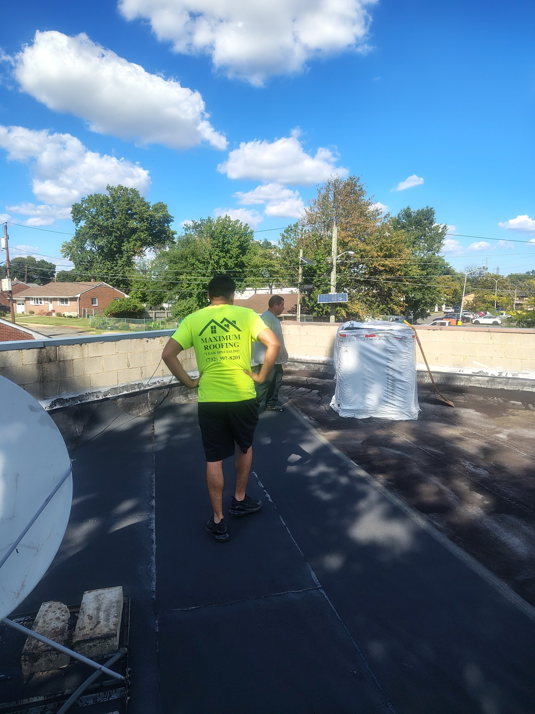
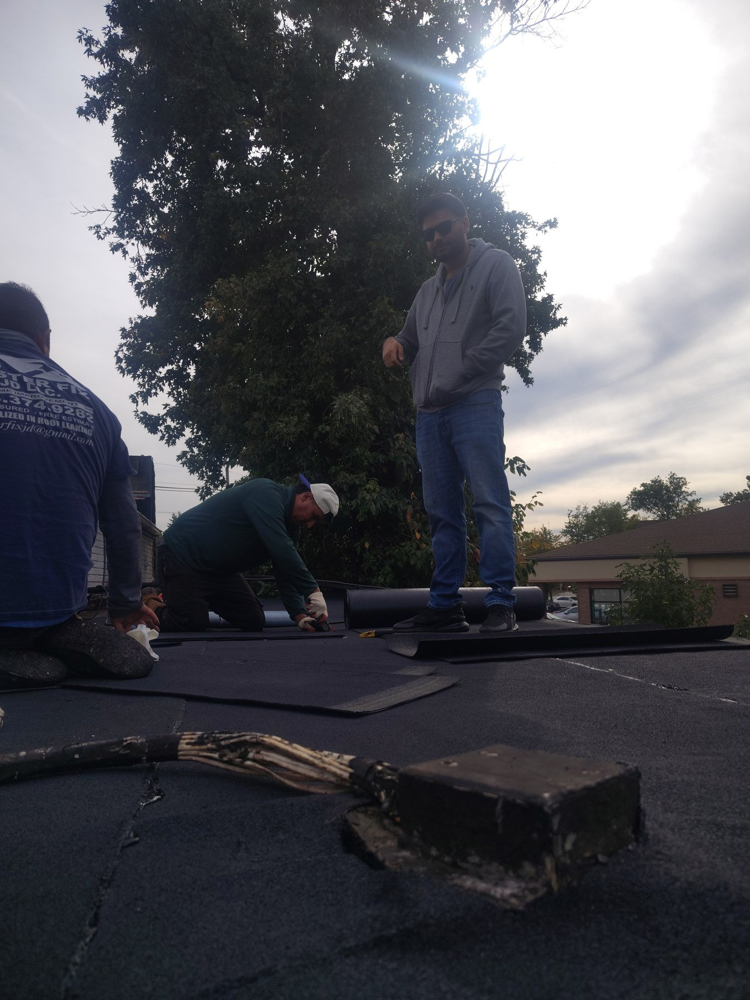

At Maximum Roofing, a commercial roofing project often starts with a straightforward conversation. For this job on Richmond Hill Road in Staten Island, New York, the property owner called with a simple question: “Do you guys provide commercial roofing?” We told him yes, and that conversation led to a visit to inspect the roof, understand what he wanted, and discuss the work ahead. His goal was clear: he wanted a whole new roof, and he wanted to get the project handled before an approaching nor’easter.
That timing was an important part of the conversation. The owner was thinking ahead about his building and wanted to address the roof before the weather became a bigger concern. Rather than waiting until the storm arrived to start looking for a contractor, he reached out to discuss his options. For us, the first step was getting out to the property and seeing the roof in person. A phone call starts the process, but an inspection gives the conversation a practical foundation.
A call, a roof inspection, and a plan
When we arrived, the owner explained that he was interested in work across the roof, rather than having us address one small section. He wanted a new roofing surface for the building. Listening to that request mattered because the scope of the work should reflect what the owner is trying to accomplish. In this case, the discussion centered on a substantial roof area that needed to be considered as a complete project.
On the roof, during the work.


Applying the modified bitumen membrane
The roofing material we applied was modified bitumen. The work extended across the roof, involving more than a small patch or an isolated repair. It involved applying roofing material across a broad commercial roof, with the owner’s request for a new roof guiding the project. The size also helps explain why an on-site visit was such an important starting point.
One detail worth explaining is that the roof area and the number of rolls describe different things. The square footage tells you approximately how much roof was involved, while the roll count describes the material used on this particular job. We share both figures to document the project clearly. They are useful details for someone looking at the photographs and wondering how large the roof was or how much material the installation required.
The project photographs help tell the story beyond those numbers. In the wider view, you can see the dark roofing surface extending across the building, with the lines between adjacent sections visible throughout the roof. You can also see the perimeter walls and rooftop equipment. These features give the project context: this is an actual commercial roof with equipment and changes in elevation, rather than an empty, uninterrupted rectangle.

The closer photograph brings the work down to the level where installation happens. It shows crew members working with roofing material, with rolls and tools nearby. While the wide photograph communicates the size of the roof, the closer view shows the hands-on nature of the job. Together, the images give property owners a better understanding of what a project of this size looks like than a description of square footage alone could provide.
Planning ahead of the nor’easter
For the owner, however, the project was about more than how the roof would look in photographs. He had called because he wanted roofing work done at his property, and he had a particular weather concern in mind. The approaching nor’easter gave the project an additional sense of urgency. His request was to get the new roof work handled before the storm, making timing an important part of the job from the beginning.
That distinction is important when telling this project’s story. The owner’s goal was to prepare ahead of the weather. The photographs document the roofing work, but they do not tell us how a roof performed through a later storm. What we can share directly is the work involved: applying modified bitumen across the roof, as shown in the project photographs and footage.
We also understand why the owner’s first question was whether we work on commercial buildings. Before discussing materials or scheduling, he wanted to know whether he had reached a company that could take on the type of project he had in mind. Our answer was yes. From there, the conversation moved toward the property itself, the roof inspection, and his preference for a new roof rather than a limited repair.
Discussing the needs of your building
That is the kind of conversation we want property owners to feel comfortable starting. You do not need to know every roofing term before calling. You may simply know that you want someone to inspect your commercial roof, explain the work being discussed, or look at a larger roofing project. This owner began with one question, then explained his priorities when we visited. Those priorities gave the job its direction.
For anyone reviewing this project, the most useful details are straightforward. The location was Staten Island, New York. The owner requested a new roof. The material applied was modified bitumen. He also wanted the work addressed before a nor’easter. Keeping those facts together gives a clear picture of the project without making the story more complicated than it needs to be.
We are sharing the photos alongside that background so readers can connect the owner’s request with the work shown. The broad roof view illustrates the overall area, while the closer image shows work taking place. For someone considering a similar conversation about their own building, seeing an actual local project can make it easier to describe what they need and what they hope to accomplish.
At Maximum Roofing, we welcome those conversations with commercial property owners in Staten Island and throughout the five New York City boroughs. Whether your starting point is a question about roof materials or a request to inspect a roof you want renewed, tell us about the building and your priorities. If weather is part of your concern, mention that when you call so it becomes part of the discussion from the outset.
To discuss commercial roofing, roof repair, or a new roof for your property, call Maximum Roofing at 732-395-3945. Like this property owner, you can start with a simple question. We will talk with you about what you need and arrange the next step toward understanding your roofing project.
20 commercial roofing facts: questions and answers
Direct answers for building owners comparing roofing materials, evaluating repairs and planning their next project.
01What is commercial roofing?
Commercial roofing is the roof system that protects a business or other commercial building. On a low-slope property, the system includes the roof covering and related details, such as insulation, flashings and drainage. The membrane is one part of that complete assembly.
02What materials are commonly used on low-slope commercial roofs?
Common options include modified bitumen, built-up roofing, TPO, PVC and EPDM. These are different roofing systems, with different installation and maintenance requirements. A material comparison should consider the building and existing roof, rather than treating every flat roof as the same.
03What is modified bitumen roofing?
Modified bitumen is asphalt-based roofing enhanced with polymers, commonly SBS or APP. It is supplied in membrane sheets and used in low-slope roof assemblies. The specific product and assembly determine the required layers, attachment method and installation details.
04Is every modified bitumen roof a torch-down roof?
No. Torch application is one installation method for certain modified bitumen products. Other systems may be self-adhered, cold-applied or hot-applied. The method must match the selected product and roof assembly; the material name alone does not establish how it should be installed.
05What does TPO roofing mean?
TPO stands for thermoplastic polyolefin. It is a single-ply membrane used on low-slope roofs, with seams joined using heat welding. TPO is a different material from asphalt-based modified bitumen, even though both can be used on commercial buildings.
06Is EPDM the same as rubber roofing?
Yes. EPDM is a synthetic rubber membrane widely used for low-slope roofing. It is a different material from TPO and modified bitumen. Product-specific seam materials, accessories and installation details are needed for the chosen EPDM system.
07Which roof material is best for a Staten Island building?
There is no single best material for every building. Roof condition, building use, climate, budget and insulation needs influence the choice. Compare complete roof assemblies and the work each option requires after an inspection, rather than choosing from a material name alone.
08Can a leaking commercial roof be repaired instead of replaced?
Sometimes. A repair may be appropriate when the problem is localized and the surrounding roof remains serviceable. Widespread moisture, deteriorated components or recurring failures can point toward more extensive work. An inspection should identify the cause and extent of damage before recommending repair or replacement.
09Can a silicone roof coating replace the need for a new roof?
A coating can be an option for a suitable existing roof, but it is not an automatic substitute for replacement. Compatibility, moisture, adhesion and existing damage need evaluation. Leaks and unsuitable wet areas must be addressed before coating; a coating does not rebuild a deteriorated roof assembly.
10How often should a commercial roof be inspected?
A useful starting schedule is twice a year, in spring and fall, plus an inspection after severe storms. Follow the roof manufacturer's maintenance requirements and any warranty conditions as well. Some buildings need more frequent attention because of rooftop activity or debris.
11Do flat commercial roofs still need drainage?
Yes. A low-slope roof still needs a working route for water to leave the roof. Drains and other drainage outlets should be kept clear of debris. Persistent standing water or recurring blockage deserves investigation rather than being accepted simply because the roof is called flat.
12Why are roof flashings important?
Flashings protect transitions where the roof meets walls, equipment curbs, pipes and other interruptions. These details need inspection along with the main roof surface. A problem at a transition can matter even when the broad, open sections of the membrane look intact.
13How long will a commercial roof last?
There is no dependable lifespan promise based on material name alone. The selected assembly, installation, exposure, roof condition and ongoing maintenance all matter. Ask for the specific product's warranty terms and a maintenance plan; a warranty period is not a guarantee of trouble-free service.
14What affects the cost of commercial roof replacement?
Cost depends on the roof area and the actual scope: removal and disposal, insulation or other materials, preparation, repairs, flashing details and labor. Two roofs with similar square footage can require different work. A useful estimate explains those differences instead of relying on one universal price per square foot.
15What should a roofing proposal explain?
Ask for the proposed materials, the work included, removal and disposal responsibilities, preparation or repair allowances, and written warranty terms. Also ask how additional work will be priced if concealed problems are found. Compare proposals against the same scope so important omissions are easier to spot.
16What should an owner arrange before a nor’easter?
Arrange a roof inspection in advance, have drainage checked for debris, and discuss known leaks or needed repairs with the contractor. Keep records of existing problems. Early planning helps define the work needed; it does not make a roof storm-proof or establish a guaranteed completion date.
17What information helps a contractor inspect a commercial roof?
Share the roof's approximate age, known material, leak locations, previous repair records and recent rooftop work. Explain when leaks occur and whether they change with rain or wind. That history helps the contractor investigate the roof and discuss an appropriate scope of work.
18What roofing material was applied on this project?
Maximum Roofing applied modified bitumen on the project on Richmond Hill Road in Staten Island, New York. The photos and videos show the roof and work in progress. The owner had requested a new roof after arranging an on-site inspection.
19How large was this roof, and how many rolls were used?
The roof area was approximately 3,200 square feet, and the project used around 33 rolls of modified bitumen. These are the reported quantities for this job. They should not be used as a universal material-ordering formula for another roof.
20Why did the owner want a new roof before the storm?
The owner called to ask whether Maximum Roofing worked on commercial buildings. During the site visit, he explained that he wanted a whole new roof and wanted the work handled before an approaching nor’easter. That was his project goal; no post-storm performance claim is being made.